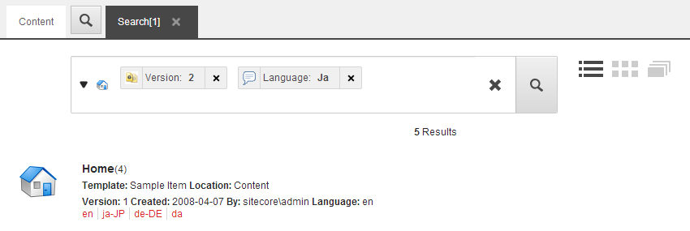
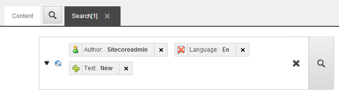

検索クエリを構築する¶
Sitecoreのウェブサイトには何千ものアイテムが含まれている可能性があるため、正確な検索を行い、検索結果を最も関連性の高いアイテムに限定する方法を知っておくことが重要です。
Sitecoreでは、シンプルな検索を実行することも、複雑な検索クエリを作成することもできます。1つの検索クエリを使って検索することも、複数のクエリを組み合わせて検索結果を限定することもできます。検索フィルタやキーワードは、必要なだけ入力することができます。
このトピックでは、その方法の概要を説明します。
デフォルトの 'or' ロジックで検索¶
複数の検索フィルタまたはキーワードを入力した場合、検索はデフォルトで「または」ロジックを使用します。つまり、他のフィルタやキーワードのうち、1つ以上のフィルタやキーワードに基づいたアイテムを検索結果として返すということです。
例えば、検索クエリでバージョン2のフィルタと日本語のフィルタを適用した場合、検索結果はバージョン2のアイテムか日本語のアイテム（またはその両方）を返します。
{kind=link}
定義済みの検索オプションで検索¶
Sitecoreでの日々の作業を楽にするために、検索機能では、最近の検索アクティビティや、最近作成または修正したアイテムの情報を収集します。これらの事前定義された検索オプションを使用すれば、コンテンツツリーでどのアイテムが選択されているかに関わらず、コンテンツエディタで定期的に作業しているアイテムに素早くたどり着くことができます。
定義済みの検索オプションには、次のようなものがあります。
最近の検索
最近変更されたアイテム
最近作成したもの
最近開いたタブ
注釈
Sitecore管理者は、ドロップダウンメニューで利用可能なデフォルトのオプションをカスタマイズすることができます。
定義済みの検索オプションからアイテムを開くには
検索フィールドの左側にあるドロップダウン矢印をクリックします。
検索オプションの1つを展開すると、その特定の検索オプションにリストされているアイテムの詳細なリストが表示されます。
アイテムへのリンクをクリックすると、編集ペインで新しいタブで開きます。
「最近の検索」で検索クエリをクリックすると、検索フィールドにクエリが挿入され、検索アイコンをクリックして検索を実行することができます。My Recent Searchesからは、複数の検索クエリを入力することができます。
{kind=link}
事前に定義された検索フィルタで検索¶
検索結果を制限するには、検索フィールドに 1 つ以上の定義済みの検索フィルタを挿入することができます。
検索フィルタを使用するには
検索フィールドの左側にあるドロップダウン矢印をクリックします。
[検索フィルタ] オプションを展開し、必要なフィルタを選択します。
フィルタは検索フィールドにコロンの後に挿入されます。
コロンの後に、フィルタの検索キーワードを入力します。Sitecoreは、テキストを自動で提案するか、日付を入力するように促します。Sitecoreが提案を行う前に、1～3文字を入力する必要があります。
ENTERを押すか、Searchをクリックします。
{kind=link}
{kind=link}
注釈
さまざまな検索の構文に慣れてきたら、検索フィールドに検索フィルタを直接入力することができます。Sitecoreは、テキストを自動提案したり、日付の入力を促したりします。
ワイルドカードと置換で検索¶
Sitecoreでの検索を支援するために、ワイルドカードと置換を使用することができます。Sitecoreは以下の記号をサポートしており、必要に応じて基本的な検索や事前に定義された検索フィルタ内で使用することができます。
引用符、例えば "text" - 正確な単語やフレーズを検索します。
*記号 - 単語のすべての形を検索します。記号は、単語の中、単語の先頭または末尾、またはこれらの組み合わせで使用できます。例えば、以下のようになります。
econom*を検索すると、"economics"、"economics"、"economic "などが検索されます。
graph*を検索すると、"paragraph"、"paragraphing"、"graphic "などが出てきます。
単独で*を使用すると、選択したアイテム内のすべてのアイテムが表示されます。
?記号 - 単語の中、または単語の最初や最後にある1文字を置き換えます。例えば、以下のようになります。
t?re」と検索すると、「tire」「tare」「tore」などが出てきます。
範囲内での検索¶
範囲内で検索する必要がある場合、Sitecoreは数値範囲検索とテキスト範囲検索の両方をサポートしています。
例えば、以下のようになります。
price：[400 TO 500]
title：[algeria TO bahrain]
注釈
開発者は、あらかじめ定義された範囲でスライドコントロールを追加することができるので、受け入れられた範囲内で見やすく、検索しやすくなります。
検索クエリで 'and' と 'not' を組み合わせる¶
特定の単語を含む必要がある、または除外する必要があるなど、複雑な検索を実行するには、クエリ内の検索フィルタを組み合わせるために、「and」、「or」、および「not」を使用する必要があります。
検索フィールドにフィルタを入力すると、検索フィルタのアイコンをクリックして、「 を含まなければならない」と「 を含まい」を切り替えることができます。
を選択した場合は、検索結果に検索フィルタの値が含まれている必要があります。
を選択した場合、検索結果にフィルタの値が含まれていないアイテムが返されます。
クエリに、 または のいずれかでマークされた検索フィルタと、マークされていない検索フィルタの両方が含まれている場合は、マークされていない検索フィルタの方が、検索結果の先頭に表示されるアイテムを決定します。
例えば、以下のスクリーンショットでは、検索結果の内容に「new」というテキストが含まれていなければならず、検索結果は英語で表示できず、sitecore\adminユーザーが書いたアイテムが検索結果の一番上に表示されます。
{kind=link}